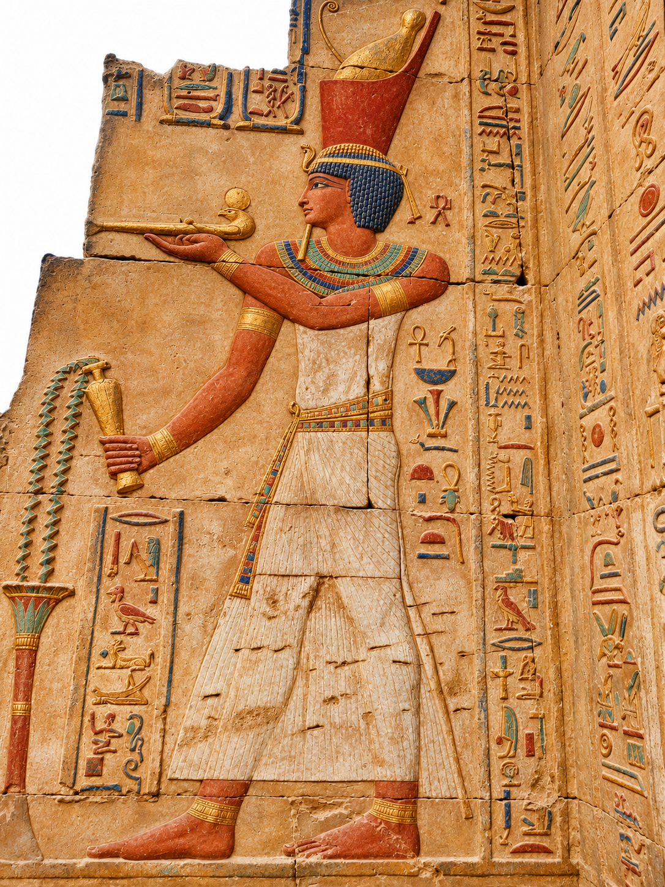

مشهد التقدمة الملكية بألوانه
افتح الكاميرا من الموبايل ووجّهها للنقش الأصلي أو لنسخة الصورة المرجعية الموجودة عندك حتى تظهر النسخة الملونة فوقها.

ملف التعرف مرفق تلقائيًا. الألوان تصور فني توضيحي.
افتح الكاميرا من الموبايل ووجّهها للنقش الأصلي أو لنسخة الصورة المرجعية الموجودة عندك حتى تظهر النسخة الملونة فوقها.

ملف التعرف مرفق تلقائيًا. الألوان تصور فني توضيحي.